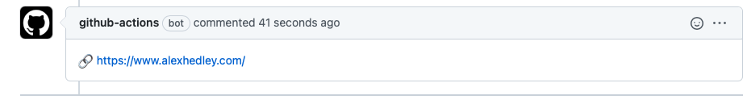

Have you ever needed to add a comment to your PR after your Jobs(s) have completed?
Scrolling through the logs can be long winded, why not add a nice comment?
Want to add some some cool emojis too?
-
- 🔗
:link: - 📘
:blue_book: - etc
- 🔗
Start with the actions/github-script action.
It has various features, one of which is to createComment.
Add the various inputs you need to configure:
github.issues.createComment({})
The body is the piece you want to update with your info
body: ':link: MY LINK'
With an output of
🔗 MY LINK
Then you can set your trigger to run on a PR and it'll add the necessary info.

Workflow
name: Add Comment
on:
# workflow_dispatch:
pull_request:
branches: [main]
jobs:
PR-Comment:
runs-on: ubuntu-latest
steps:
- name: PR Comment
if: github.base_ref == 'main'
uses: actions/github-script@v2
with:
github-token: ${{secrets.GITHUB_TOKEN}}
script: |
github.issues.createComment({
issue_number: ${{ github.event.number }},
owner: context.repo.owner,
repo: context.repo.repo,
body: ':link: MY LINK'
})